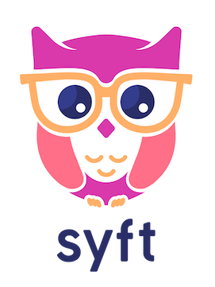
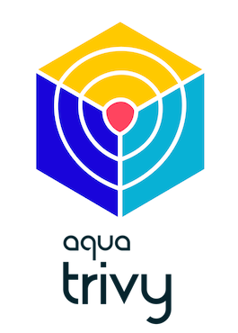

Tools overall analysis
List of SBOM generation tools
Some of the features we used to analyze the SBOM generation tools were based on the framework for Evaluating SBOM Tools in fossa, such as:
1. What standards it supports (SPDX, Cyclone DX)
2. Compliance with the Cyber Security Executive Order
3. Data Field Coverage
4. Automation Support
5. Programming Language Support
6. Dependency Recognition Depth
We classified the tools following the SBOM Tool Classification Taxonomy document by the NTIA SBOM Formats & Tooling Working Group.
Syft
| Feature | Description |
|---|---|
| Logo |  |
| Version | 0.83.1 |
| License | Apache License 2.0 |
| Language | Go |
| Classification | Author after Creation (Audit tool) |
| Functionality | Generates SBOMs for container images, filesystems, archives, and more to discover packages and librariesSupports OCI, Docker and Singularity image formatsLinux distribution identificationWorks seamlessly with Grype (a fast, modern vulnerability scanner)Able to create signed SBOM attestations using the in-toto specificationConvert between SBOM formats, such as CycloneDX, SPDX, and Syft’s own format. |
| Locations | https://github.com/anchore/syft |
| Automation support | Yes |
| Data Fields | This tool assumes project metadata from the repo including name and license. It does identify find project version. |
| Package Depth | This tool identifies dependencies between packages at the top level. |
| Relationships | The tool could identify relationships between the packages and their metadata files. Still, it could not assign the correct relationship type for the dependencies and instead assiged the type other between all packages and files. |
| Support Specifications | SPDX Versions: 2.2, 2.3Formats: JSON, tag-valueCycloneDX Versions: 1.4Formats: JSON, XML |
| How to use | Container Images:$ syft {image} -o {format}={output-file}Directories: $ syft {package-dir} -o {format}={output-file} |
| Installation | Instructions: https://github.com/anchore/syft#installation It requires sudo: No It was installed: Yes |
| Testing | It was tested: Yes Comments: |
Tern
| Feature | Description |
|---|---|
| Logo | |
| Version | 2.12.0 |
| License | BSD-2-Clause license |
| Language | Python3 with a smattering of shell scripts |
| Classification | Author after Creation (Audit tool) |
| Functionality | Tern is an inspection tool to find the metadata of the packages installed in a container image. The overall operation looks like this: - 1) It analyzes the first layer of the container image to collect information like distro type, package format, and package managers; - 2) It then executes scripts from the “command library” in a chroot environment to collect information about packages installed in that layer; - 3) With that information as a starting point, it continues to analyze the subsequent layers in the container image; - 4) Once done, it generates a report of packages with their metadata. Several formats are available. The report, in its default format, provides a layer by layer, explanation of the various software components imported. If a Dockerfile is provided, the report indicates the Dockerfile lines corresponding to each of the file system layers. |
| Locations | https://github.com/tern-tools/tern |
| Automation support | Yes |
| Data Fields | This tool assumes project metadata from the repo including name and license. It does identify find project version. |
| Package Depth | This tool also identifies dependencies between packages below the top level. |
| Relationships | In addition to contains and describes, there are two relationship types generatedFrom and hasPrerequisite. |
| Support Specifications | SPDX Versions: 2.1, 2.2Formats: JSON, tag-valueCycloneDX Versions: 1.4Formats: JSON |
| Functions | reportlock |
| How to use | Container Images:$ tern report -f {sbom-format} -i {image}:{version} -o {output-file}Docker Files: $ tern report -d {path_to_dockerfile} |
| Installation | Instructions: https://github.com/tern-tools/tern#getting-started It requires sudo: Yes It was installed: No |
| Testing | It was tested: Yes Comments: I could run Tern by building a container with the Dockerfile provided. |
Trivy
| Feature | Description |
|---|---|
| Logo |  |
| Version | 0.42.1 |
| License | Apache-2.0 license |
| Language | Go |
| Classification | Author during Build, Author after Creation (Audit tool), Consume(Analyze) |
| Functionality | Scan the target for vulnerabilities, misconfigurations, secrets, and licenses. Targets can be Container Image, Filesystem, Rootfs, Git Repository, Virtual Machine Image, Kubernetes, AWS, and SBOM.Trivy can take a CycloneDX(JSON) or SPDX(tag-value or JSON) SBOM as an input and scan for vulnerabilities. The Trivy AWS CLI allows you to scan your AWS account for misconfigurations. You can either run the CLI locally or integrate it into your CI/CD pipeline. |
| Locations | https://github.com/aquasecurity/trivy, https://aquasecurity.github.io/trivy/v0.43, https://aquasecurity.github.io/trivy/v0.43/docs/target/aws/ |
| Automation support | Yes |
| Data Fields | This tool assumes project metadata from the repo including name and license. It does identify find project version. |
| Package Depth | |
| Relationships | |
| Support Specifications | SPDX Versions: 2.3Formats: JSON, tag-valueCycloneDX Versions: 1.4Formats: JSON |
| How to use | Directories:$ trivy fs --list-all-pkgs --format {sbom-format} --output {output-file} {package-dir}Container Images: $ trivy image --list-all-pkgs --format {sbom-format} --output {output-file} {image}:{version}Repository: $ trivy repo --list-all-pkgs --format {sbom-format} --output {output-file} {repository} |
| Installation | Instructions: https://aquasecurity.github.io/trivy/v0.43/getting-started/installation/ It requires sudo: No It was installed: Yes |
| Testing | It was tested: Yes |
Fossa
| Feature | Description |
|---|---|
| Logo | |
| Version | 3.8.2 |
| License | MPL-2.0 license |
| Language | Java |
| Classification | Author during Build, Author after Creation (Audit tool), Consume(View, Analyze), Transform(Translate, Tool Integration) |
| Functionality | It heps to track, manage, and remediate issues with open source to: 1. Stay compliant with software licenses and generate required attribution documents; 2. Enforce usage and licensing policies throughout your CI/CD workflow; 3. Monitor and remediate security vulnerabilities; 4. Flag code quality issues and outdated components proactively. |
| Locations | https://app.fossa.com/, https://app.fossa.io, https://docs.fossa.com/docs/getting-started |
| Automation support | Yes |
| Data Fields | This tool assumes project metadata from the repo including name and license. It does identify find project version. |
| Package Depth | 5 dependency depth levels |
| Relationships | In addition to contains and describes, there are two relationship types dependsOn and dependsOf. |
| Support Specifications | SPDX Versions: 2.3Formats: JSON, tag-valueCycloneDX Versions: 1.2, 1.3, 1.4Formats: JSON, XML |
| How to use | Online Application: You need to create an account at https://app.fossa.io/account/register than you can navigate to Projects > Add Project to import the project you want to analyze and export the SBOM file. Its possible to analyze code locally with FOSSA CLI, but you still need to connect it to your account and the report is a link to their FOSSA web application, which will load the project and reports to be visualized and exported in . For more details see https://docs.fossa.com/docs/getting-started |
| Installation | Instructions: https://github.com/fossas/fossa-cli It requires sudo: No It was installed: Yes |
| Testing | It was tested: Yes Comments: It was tested using FOSSA CLI their online application to export the SBOM file. |
bom
| Feature | Description |
|---|---|
| Logo | |
| Version | v0.5.1 |
| License | Apache-2.0 license |
| Language | Go |
| Classification | Author after Creation (Audit tool) |
| Functionality | bom is a general-purpose tool that can generate SPDX packages from directories, container images, single files, and other sources. The utility has a built-in license classifier that recognizes the 400+ licenses in the SPDX catalog. Other features include Golang dependency analysis and full .gitignore support when scanning git repositories. |
| Locations | https://github.com/kubernetes-sigs/bom, https://kubernetes-sigs.github.io/bom/ |
| Automation support | Yes |
| Data Fields | This tool assumes project metadata from the repo including name and license. It does identify find project version. |
| Package Depth | This tools does not identify any project dependencies |
| Relationships | This tool only identifies relationships between the project and its files. |
| Support Specifications | SPDX Versions: 2.3Formats: JSON, tag-value |
| Functions | documentgenerate |
| How to use | Container Images:$ bom generate -a --format {sbom-format} --output {output-file} -i {image}:{version}Directories: $ bom generate -a --format {sbom-format} --output {output-file} -d {package-dir} |
| Installation | Instructions: https://github.com/kubernetes-sigs/bom#installation It requires sudo: Yes It was installed: Yes |
| Testing | It was tested: Yes Comments: |
Microsoft SBOM Tool
| Feature | Description |
|---|---|
| Version | 1.1.6 |
| License | MIT license |
| Language | C# |
| Classification | Author after Creation (Audit tool) |
| Functionality | Validate a build artifact using the manifest, and generate a SBOM for all the files in the given build drop folder, and the packages in the components path. |
| Locations | https://github.com/microsoft/sbom-tool |
| Automation support | Yes |
| Data Fields | This tool assumes project metadata from the repo including name and license. It does identify find project version. No files were detected. |
| Package Depth | All packages detected by this tool are directly related to the main package. |
| Relationships | All relationships between the project and its packages are of the type dependsOn |
| Support Specifications | SPDX Versions: 2.2Formats: json |
| Functions | validategenerate |
| How to use | Directories:$ sbom-tool generate -b {output-dir} -bc {package-dir} -pn {package-name} -pv {package-version} |
| Installation | Instructions: https://github.com/microsoft/sbom-tool#download-and-installation It requires sudo: No It was installed: Yes |
| Testing | It was tested: Yes Comments: |